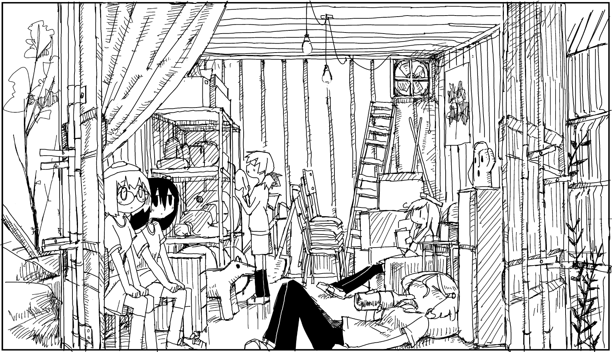
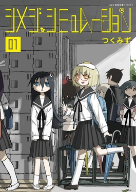

is a Japanese four-panel surreal comedy manga series written and illustrated by Tsukumizu. It was serialized in Media Factory's Comic Cune magazine from January 2019 to November 2023 and compiled into five tankōbon volumes.
Shimeji Simulation follows Shijima Tsukishima, a former hikikomori who decides to attend high school after spending two years in her closet. As she gets ready for school, she finds shimeji mushrooms have sprouted from her head. Later, at school, Shijima is approached by Majime Yamashita, a girl with a fried egg on her own head, which she says she was born with. The two bond while more strange events happen in their town.